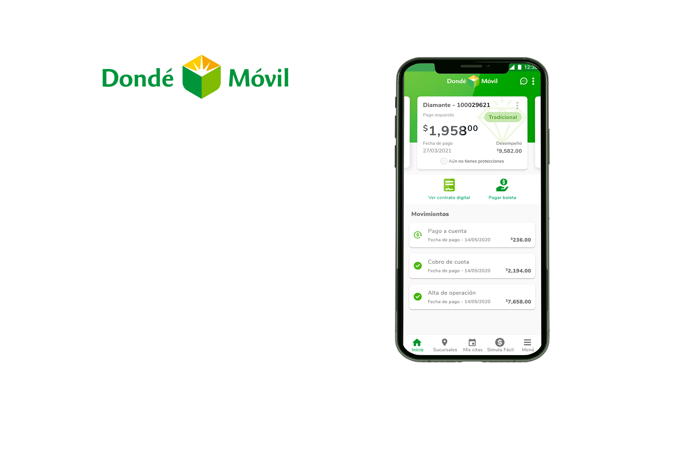
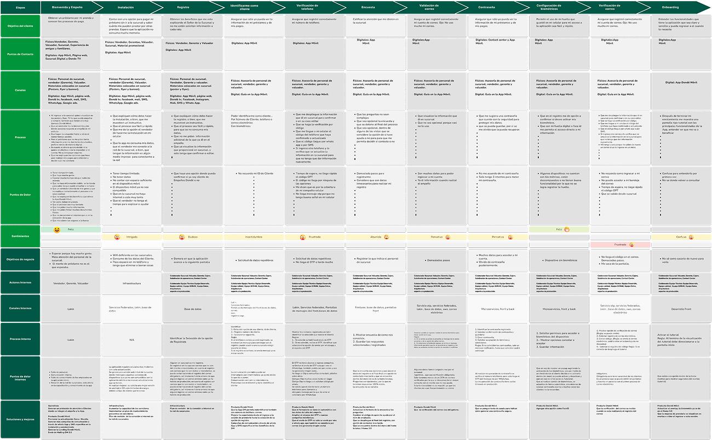
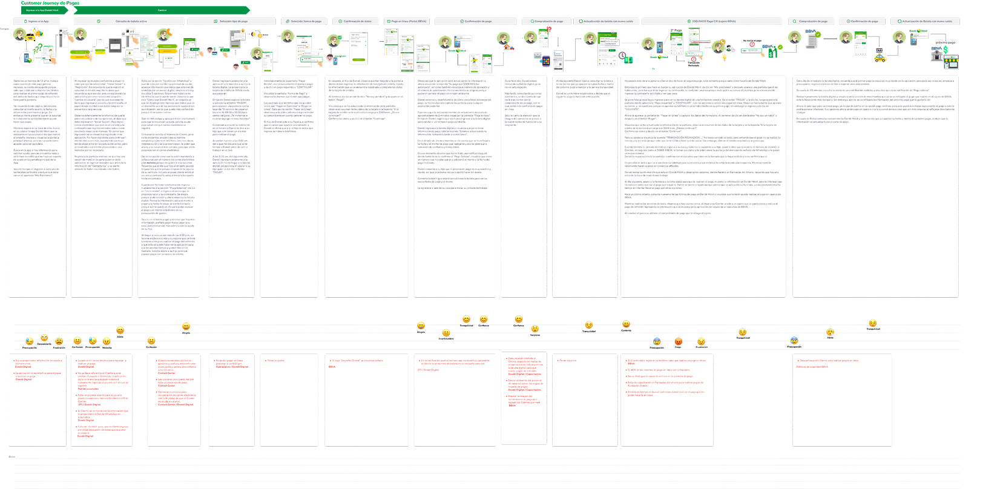
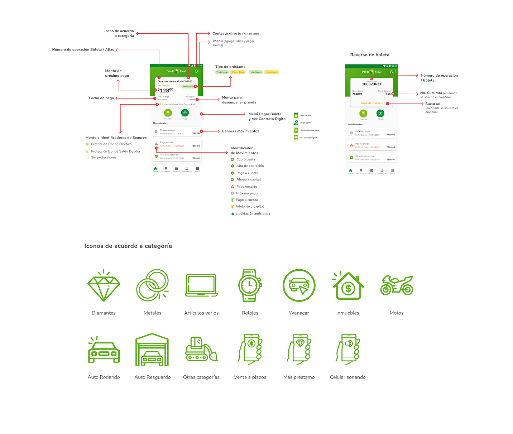
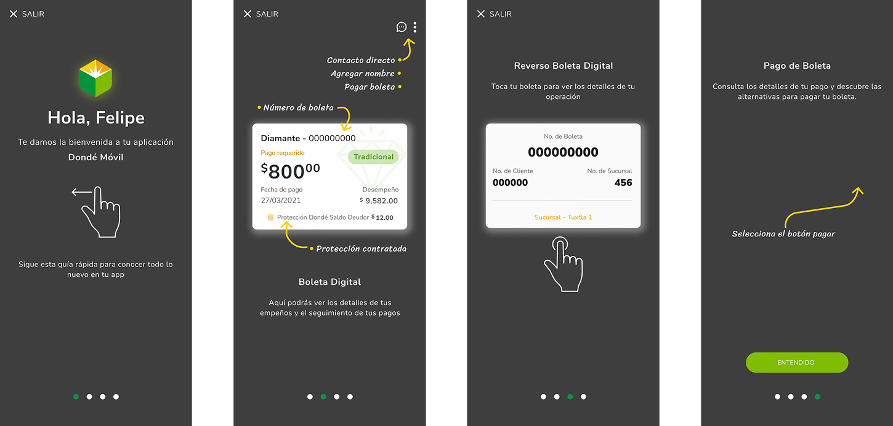

Dondé Móvil es una app mexicana enfocada en el empeño digital de joyería y electrodomésticos, principalmente celulares. Funciona como una alternativa moderna a las casas de empeño tradicionales, permitiendo a los usuarios obtener liquidez rápida sin tener que ir físicamente a una sucursal.
"Diseñé experiencias digitales para transformar el modelo tradicional de empeño en una plataforma mobile-first, reduciendo fricción en procesos financieros complejos y mejorando la transparencia para el usuario."
Servicios
Service Blueprint
Los service blueprints se convirtieron en un artefacto central de alineación cross-funcional, conectando equipos de:
Los blueprints no se quedaron en documentación. Se convirtieron en un punto de encuentro entre equipos. Sirvieron para alinear conversaciones entre producto, diseño y operaciones, y ayudaron a responder preguntas clave: ¿Qué debería saber el usuario antes de ir a sucursal? ¿Qué procesos necesitan adaptarse para cumplir la promesa digital? ¿Dónde estamos generando fricción innecesaria?
A partir de esto, se ajustaron flujos, se redefinieron expectativas y se diseñaron experiencias más coherentes entre canales.


Research
Funcionaron como la capa narrativa para mostrar qué vivía el usuario. Juntos permitieron:
Se convirtió en una herramienta clave para generar empatía dentro del equipo, tomar decisiones centradas en el usuario e identificar oportunidades de mejora más allá de la interfaz.
Y sobre todo, ayudó a entender que mejorar la experiencia no era cuestión de agregar features, sino de eliminar fricción en los momentos que más importan.
Design System
Las boletas de pago y la sección de movimientos cumplían su función, pero no estaban diseñadas para escalar.
La información era correcta, pero no necesariamente clara, consistente o fácil de interpretar.
Y en un contexto financiero, esto no es menor: cuando el usuario no entiende, desconfía.


Onboarding
Uno de los momentos más críticos del producto ocurre antes de que el usuario haga cualquier acción.